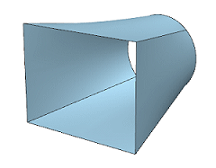
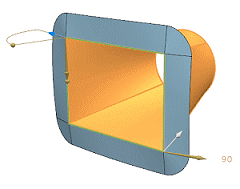
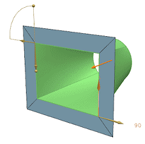

Estimated time to complete: 7–10 minutes
In this activity, you will create a law extension surface that creates a flange around the rectangular end section of a duct transition. You will specify spine, miter, and curve fit settings.

Launch the Create a law extension flange on a duct end piece activity.